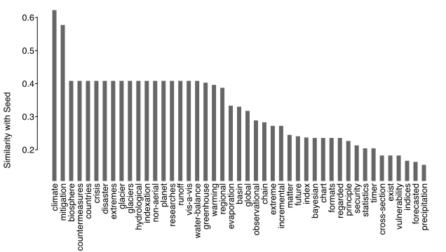

example-seed_expand.RmdBuilt with R 4.2.1
This example looks at a set of patent applications based on an initial seed set.
Before starting, we’ll need to load the package, and point to a directory where we’d like things saved:
# install if needed: remotes::install_guthub("uva-bi-sdad/uspto")
library(uspto)
outDir <- "eda/seed_expand/"We’ll start by identifying a small set of applications with a meteorology Cooperative Patent Classification (CPC) class, and that mention “global warming” or “climate change” in their abstracts:
seed_set <- uspto_search(
'g01w.cpcl. AND ("global warming".ab. "climate change".ab.)',
"US-PGPUB",
outFile = paste0(outDir, "seed_set.csv")
)This gives us 9 applications from between 2012-05-17 and 2022-06-09.
For some context around the examination of these applications, we’ll want to collect all of the other applications examined by the examiners of the initial set. Examiners are not included in applications, so we’ll need to identify them by the office actions associated with the applications.
First, we need to know which examiners examined the seed set of applications:
office_actions <- download_office_actions(
paste0("patentApplicationNumber:(", paste(
sub("/", "", seed_set$applicationNumber, fixed = TRUE),
collapse = " "
), ")"),
paste0(outDir, "seed_set_office_actions.json.xz"),
verbose = FALSE
)From these 63 office actions, we can get a set of examiners:
And now we have 6 examiners who examined at least one application in our seed set.
Next, we want to collect all of the other applications our identified examiners examined. Again, since examiners are not directly associated with applications, we’ll have to first collect all of their office actions:
all_office_actions <- download_office_actions(
paste0("examinerEmployeeNumber:(", paste(examiners_ids, collapse = " "), ")"),
paste0(outDir, "all_office_actions.json.xz"),
verbose = FALSE
)
all_applications <- unique(unlist(all_office_actions$patentApplicationNumber))This gives us 3201 total applications.
There are at least three sources of information that might be of interest when considering the examination of a patent application: One we have in office actions, another similar to those are the full prosecution histories, and finally, the text of the applications themselves.
Prosecution histories track when happens to an application between the submitter and the patent office. These are recorded in the Patent Examination Data System (PEDS):
library(jsonlite)
examinations_file <- paste0(outDir, "examination_records.json.xz")
if (file.exists(examinations_file)) {
con <- gzfile(examinations_file)
examination_records <- fromJSON(readLines(con))
close(con)
} else {
# have to break up the calls based on some limit on query length theoretically
n <- length(all_applications)
filters <- lapply(
split(sub("/", "", all_applications, fixed = TRUE), sort(rep_len(seq_len(ceiling(n / 500)), n))),
function(set) paste0("applId:(", paste(set, collapse = " "), ")")
)
examination_records <- unlist(lapply(filters, function(f) {
unlist(
download_peds(filters = list(f), verbose = FALSE)$content, FALSE, FALSE
)
}), FALSE, FALSE)
con <- xzfile(examinations_file)
write_json(examination_records, con, auto_unbox = TRUE)
close(con)
}Finally, we can collect the actual content of each application, based on the document IDs included in the examination records:
document_ids <- unique(unlist(lapply(examination_records, function(r) {
if (is.list(r)) r$patentPublicationIdentification$publicationNumber else NULL
})))
document_ids <- document_ids[!is.na(document_ids)]
oriDir <- "eda/original/"
if (!dir.exists(oriDir)) oriDir <- "../eda/original/"
applications <- uspto_download(document_ids, outDir = paste0(oriDir, "applications"))We can start with a simple look at the text to get a feel for what sets our seed set apart:
# identify the applications that were part of the initial seed set
applications$seed <- applications$applicationNumber %in% seed_set$applicationNumber
# count up terms used within abstracts
library(lingmatch)
#> Loading required package: Matrix
dtm <- lma_dtm(applications$abstractHtml, "function")
# identify the terms that most identify the seed set
term_seed_sim <- lma_simets(t(dtm), !applications$seed, metric = "cosine")
term_seed_sim <- sort(term_seed_sim[term_seed_sim > .25], TRUE)
library(splot)
splot(
term_seed_sim ~ names(term_seed_sim),
type = "bar", sort = FALSE, title = FALSE, labx = FALSE, laby = "Cosine Similarity"
)